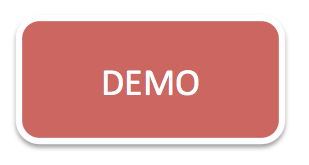
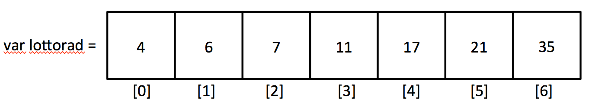
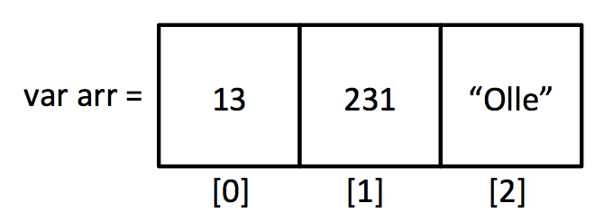

Klientbaserad webbutveckling, 1DV435
Linnéuniversitetet, Ht 2014
JavaScript, Del 2
Vad är kvar av kursen
- Föreläsningen idag
- Fredag, handledningspass förmiddag
- Måndag, redovisning distans
- Tisdag, redovisning campus
- Projektet
- Mejla in projektgrupp senast 18:e december klockan 23:59.
- Slutlig leverans: senast 16/1 klockan 08:00
- Handledning enligt schema
Förra gången
- JavaScript och programmeringsspråk
- Grunder i programmering
- Hur kommer man åt element i DOM-dokumentet via javascript
- Hur kan man skriva kod för t.ex. knapptryckningar
Att skriva till DOM:en

innerHTML
Ett enkelt sätt att skriva till element i DOM:en är att använda
möjligheten till innerHTML
var element = document.getElementById("message"); // <p id="message"></p>
element.innerHTML = "Meddelande från javascript";
Utöka förra veckans exempel med att skriva ut beräkningarna i en lista.

Ändra CSS med JavaScript
Vi kan naturligtvis ändra stilegenskaperna via javascript
document.getElementById("message").style.display = "none";
document.getElementById("message").className = "myCssClass";
document.getElementById("message").className += " myOtherCssClass";
Du kommer känna igen egenskaperna från vanlig CSS:
- color - style.color
- background-color - style.backgroundColor
Alternativ (Conditional)

Som programmerare ställs man inför problem där man måste kunna
skriva olika kod för olika fall.
- Har användaren skrivit ett nummer eller en textsträng
- Tryckte användaren på knapp A eller knapp B?
- Vill användaren visa eller dölja innehållet?
- Är provresultatet över gränsen för godkänt?
- ...
if-sats
OM något är SANT ska vi...
T.ex.
OM användaren har loggat in i systemet ska informationen visas
OM elementet är dolt ska det visas ANNARS ska det visas
Vi testar om något är SANT eller FALSKT
var elementValue = document.getElementById("name").value;
var name = "Erika";
if(name === elementValue) {
alert("Användaren är inloggad");
// Mer kod här sedan...
}
else {
alert("Användaren är INTE inloggad");
// Mer kod här sedan...
}
Operatorer
- tal1 < tal2 - Mindre än
- tal1 > tal2 - Större än
- tal1 === tal2 - Lika med ( boken använder == )
- tal1 >= tal2 - Större eller lika med
- tal1 <= tal2 - Mindre eller lika med
- tal1 !== tal2 - Inte lika med ( boken använder !=)
http://stackoverflow.com/questions/3804005/whats-the-reason-to-use-instead-of-with-typeof-in-javascript
var antal = 6;
var name = "Johanna";
if(name === "Johan") {
if(tal > 5) {
alert("Vi hamnar i första if-satsens if-sats");
}
else {
alert("Vi hamnar i första if-satsens else-sats");
}
}
else {
if(tal !== 5) {
alert("Vi hamnar i andra if-satsens if-sats");
}
else {
alert("Vi hamnar i andra if-satsens else-sats");
}
}
Fixa applikationen
querySelector och querySelectorAll
Ett alternativt sätt till getElementById som ger oss
möjlighet att plocka ut element beroende på andra saker än
bara ett id.
var activeElement = document.querySelector(".active");
Koden ovan returnerar första elementet med klassen "active". Men det kan ju finnas flera!
var activeElementList = document.querySelectorAll(".active");
Vi får nu en "lista" med element. Men hur hanterar man liknande listor i javascript?
Variabler som hör ihop
I många fall har man ett godtyckligt antal värden som hör ihop
var lottorad = [4, 6, 7, 11, 17, 21, 35];
- En talserie (lottorad, en lista med temperaturer för en månad o.s.v.)
- En lista med personers namn
- EN HTML-lista med li-element
var temperatur1 = 3;
var temperatur2 = 6;
var temperatur3 = 4;
...
var temperatur30 = 18;
Dessa värden kan man spara som EN variabel i en så kallad Array
Hur funkar en array?
Om man kan se en variabel som en låda med ett värde i sig
var lottorad = [4, 6, 7, 11, 17, 21, 35];
Kan man se en array större låda med flera lådor/fack i sig

Array i JavaScript
var array = []; // skapa en tom array
array[0] = 13;
array[1] = 231;
array[2] = "Olle";

console.log("Första värdet i arrayen är: " +array[0]);
console.log("Sista värdet i arrayen är: " +array[2]);
Vilka värden skrivs ut?
var arr = [1, 4, -5, 10, 123];
var arr2 = [123, 10, -5, 4, 1];
// Vad skrivs ut?
alert(arr[0]);
alert(arr2[2]);
alert(arr[4]);
alert(arr2[0]);
alert(arr[5]);
Hantera godtyckliga arrayer
Hur kan vi på ett effektivare sätt hantera alla värden i en array
oavsett hur många som finns sparade i arrayen?
// Skriv ut alla värdena i en array vars längd är 3000
// Blir jobbigt om man har många värden
element.innerHTML = "<li>" +arr[0] +"</li>";
element.innerHTML += "<li>" +arr[1] +"</li>";
element.innerHTML += "<li>" +arr[2] +"</li>";
element.innerHTML += "<li>" +arr[3] +"</li>";
...
element.innerHTML += "<li>" +arr[3000] +"</li>";
Vi behöver göra liknande sak om och om och om igen.
Repetion - Loop
- När man vill repetera någon kod många gånger använder man någon typ av loop
- Det finns flera olika sorters loopar
for-loop, while-loop, for-in, for-each
- Vi kommer koncentrera föreläsningen på for-loopen
Om for-loopen
for (var i = 0; i < 10; i++) {
// Allt som står innanför klammerparanteserna
// körs 10 ggr
// variablen i (kallas räknare) kommer att ökas med 1 för varje gång
}
for (initsiering; uttryck; uppräkning/nedräkning) {
// lika många gånger som loopen körs
// körs också denna kod
}
Om for-loopen
for (var i = 0; i < 10; i++) {
alert(i);
// Allt som står innanför klammerparanteserna
// körs 10 ggr
// variablen i (kallas räknare) kommer att ökas med 1 för varje gång
}
for (initsiering; uttryck; uppräkning/nedräkning) {
// lika många gånger som loopen körs
// körs också denna kod
}
Arrayer och for-loopar passar bra ihop
Att kombinera loopar och arrayer är
en vanligt förekommande uppgift i programmering
// Antag vi har en array med godtyckligt antal värden (variabelnamnet är arr)
// Vi kan enkelt ta reda på hur många värden som finns i arrayen
var arr = [3, 12, 6, 3, 987];
var arrLength = arr.length;
for(var i = 0; i < arrLength; i++) {
alert(arr[i]);
}
Använd en foor-loop för vår lista med element
Att använda andras kod
 Denna presentation är licensierat under en
Creative Commons Erkännande 3.0 Unported Licens.
Denna presentation är licensierat under en
Creative Commons Erkännande 3.0 Unported Licens.